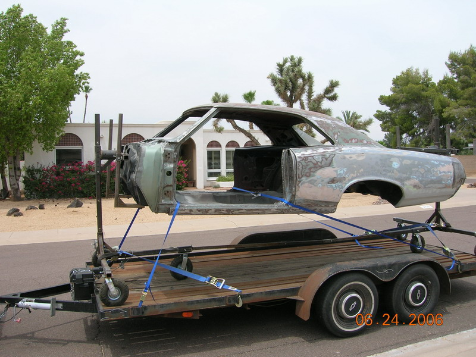
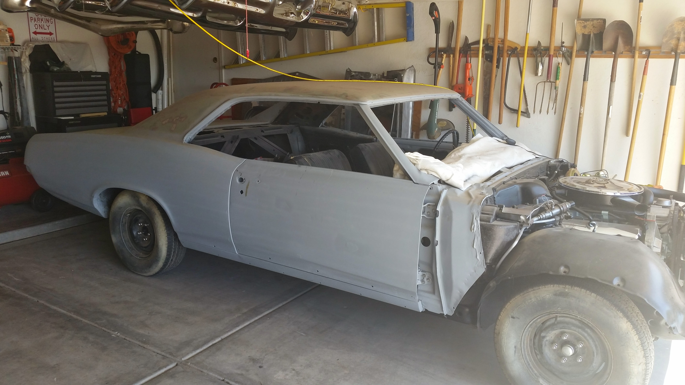
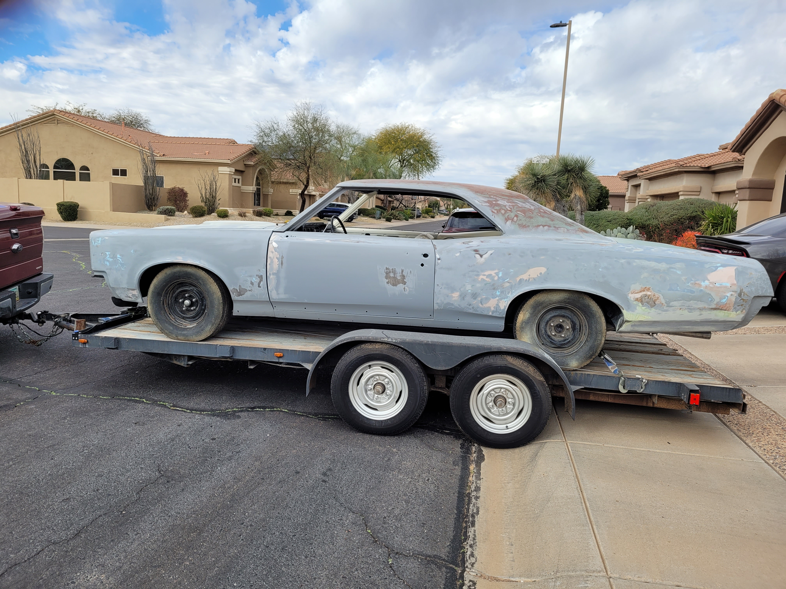
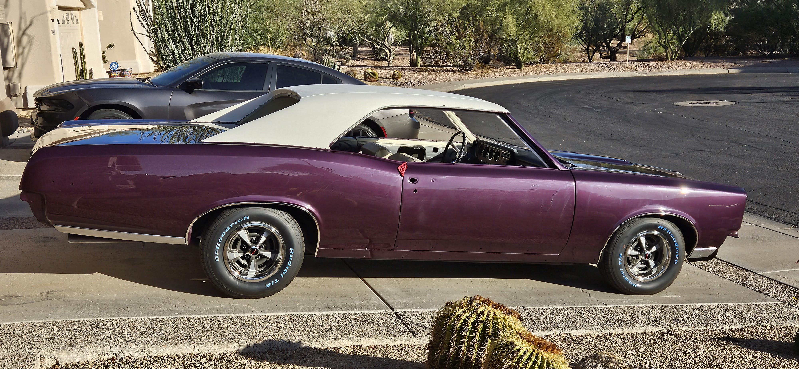

Home
Timeline
About Sheila
Contact the Owner

2006: Early body work

2015: Late body work

Early 2023: Finished body work

Late 2023: A fresh paintjob
Early 2024: Given new life
 Early 2024: Given new life
Early 2024: Given new life